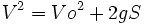

De: La Frikipedia, la enciclopedia extremadamente seria.
De: La Frikipedia, la enciclopedia extremadamente seria. De: La Frikipedia, la enciclopedia extremadamente seria.

La teoría animista es una de las numerosas teorías que han surgido a lo largo de la historia para explicar el fenómeno de la caida de los cuerpos.
Hoy día, se sabe que la teoría de la gravitación universal de Newton y la teoría relativista de Einstein no son mas que mierda creada para hacer mas difícil la asignatura de física y que no esté al alcance de cualquiera.
La teoría animista sostiene que los cuerpos no son atraídos por ninguna fuerza ni caen por ninguna curvatura espacio-temporal. Según esta teoría, los cuerpos tienen conciencia, y quieren suicidarse porque no pueden mas con su vida, y por eso se tiran al suelo.
La teoría animista, al contrario que la teoría de la gravitación universal, puede explicar por qué el Sol, la Luna, las estrellas, los planetas, las nubes y los pájaros no se caen.
La razón es bien sencilla, estas cosas mencionadas no se caen porque no tienen el instinto suicida que tienen las manzanas, las piedras, los bolígrafos y las monedas de un euro.
Si lo que dice Newton fuese cierto, las nubes se caerían, al igual que las estrellas y el sol, en lugar de poder mantenerse en el aire.
Ahora veremos cómo sería la resolución de problemas de física desde el punto de la gravitación universal de Newton y desde el punto de la teoría animista.
Un cuerpo de masa m está suspendido a una altura de 500 m sobre la superficie terrestre. Tres segundos después de la muerte de Cristo, el hilo rojo de nylon que sostenía el cuerpo es seccionado por un wombat con el fin de conseguir la dominación mundial. ¿Con qué velocidad llegará al suelo?
Según Newton, tendríamos que saber complicadas e inútiles fórmulas para hallar que , y calculando que el valor exacto de la velocidad es: Mucho.
La teoría animista es una solución a esto, ya que mediante un simple procceso de razonamiento podemos solucionar así el problema:
Cuando el wombat corta la cuerda, el cuerpo de masa m decide que es hora de acabar con su vida, dando libertad a sus instintos suicidas y lanzándose contra el suelo. Por tanto, la velocidad con la que llegará al suelo será la que le salga de la polla y es incalculable ya que depende únicamente de la voluntad del propio objeto.
Ya en la antigüedad, los grandes pensadores como Platón defendían la teoría Animista, como podemos ver en una de sus mas famosas obras, el Menón:
Numerosos personajes famosos están a favor de esta teoría, ya que consideran una barbarie que en los institutos y universidades de enseñe mierda como la de Newton, y quieren que se sepa la verdad. Algunos de estos personajes son:
También hay un grupo de personas que discrepan con la teoría animista, aunque su opinión no puede contar en absoluto, ya que sus mentes no dan para mas. Ellos son:
Y no mucha más gente, porque esta teoría se ve que es cierta.
| | |||
|
Materia
Magnitudes
Mecánica
Cinética y Dinámica
Energía
Física Cuántica y Nuclear
Científicos
|
Autor(es):